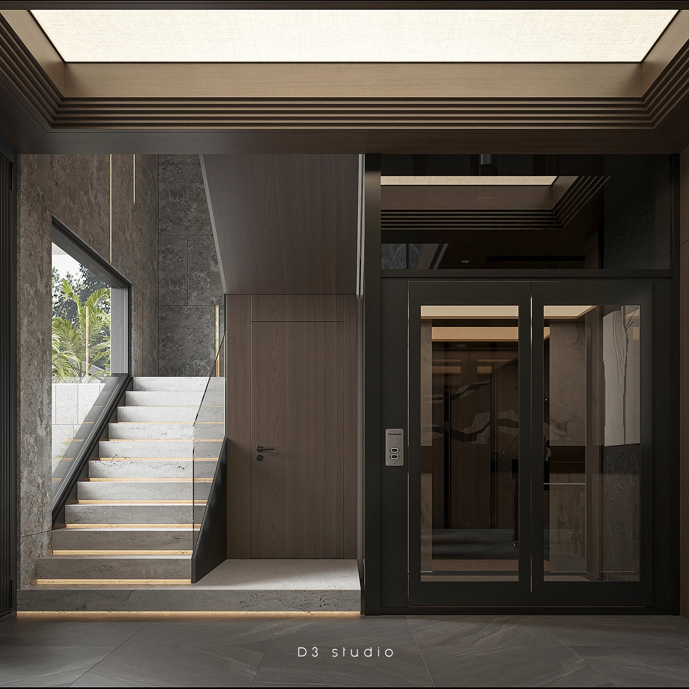
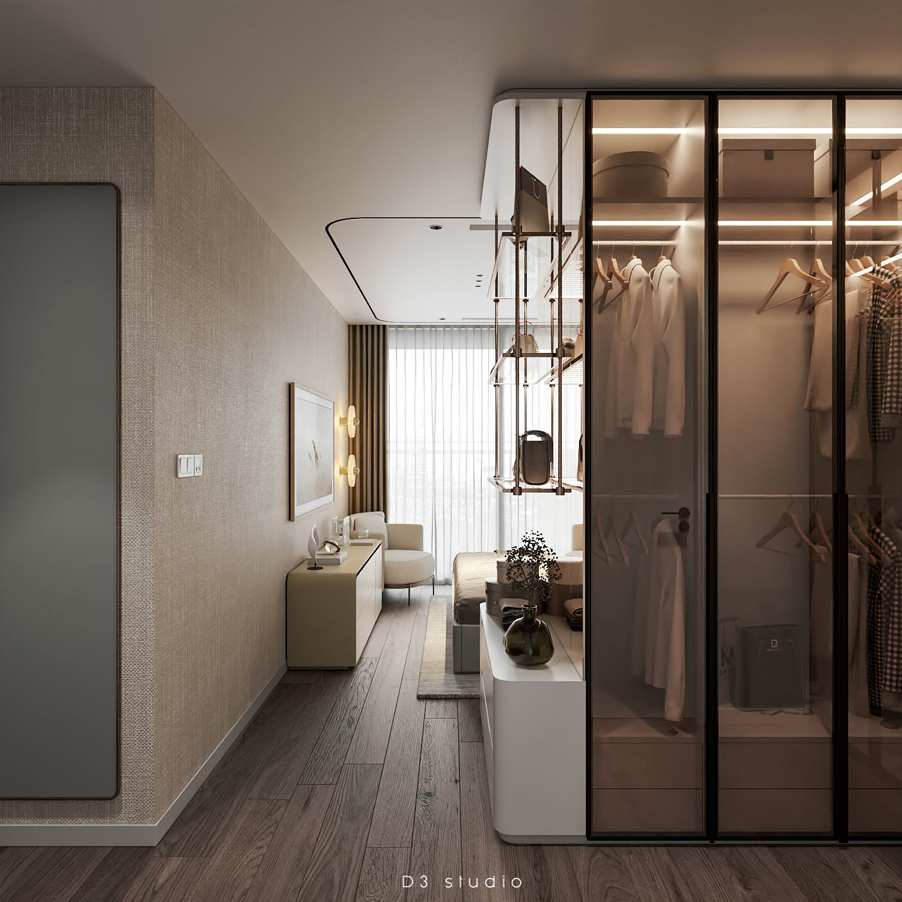
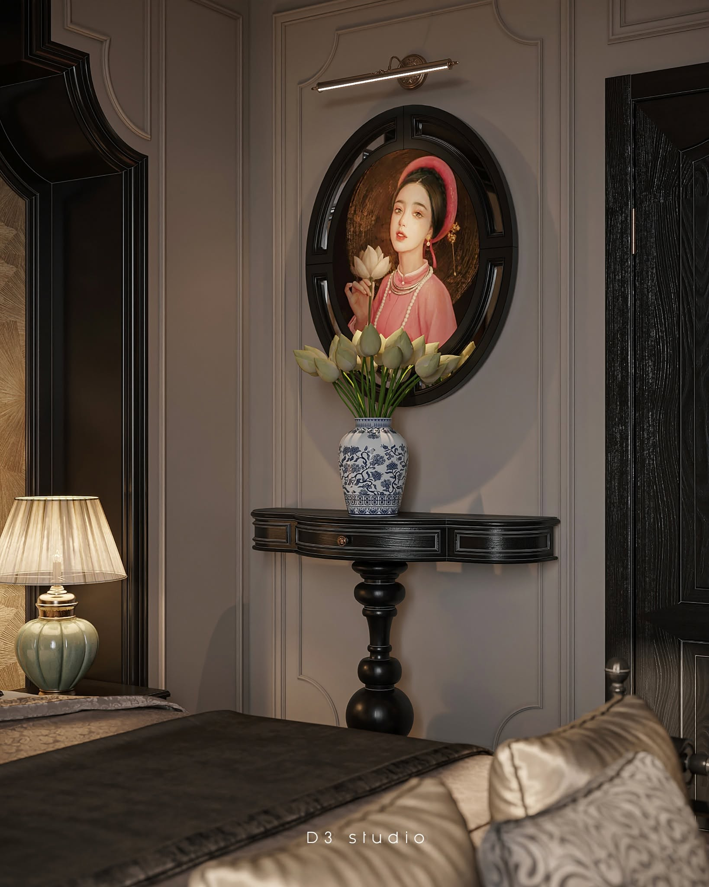
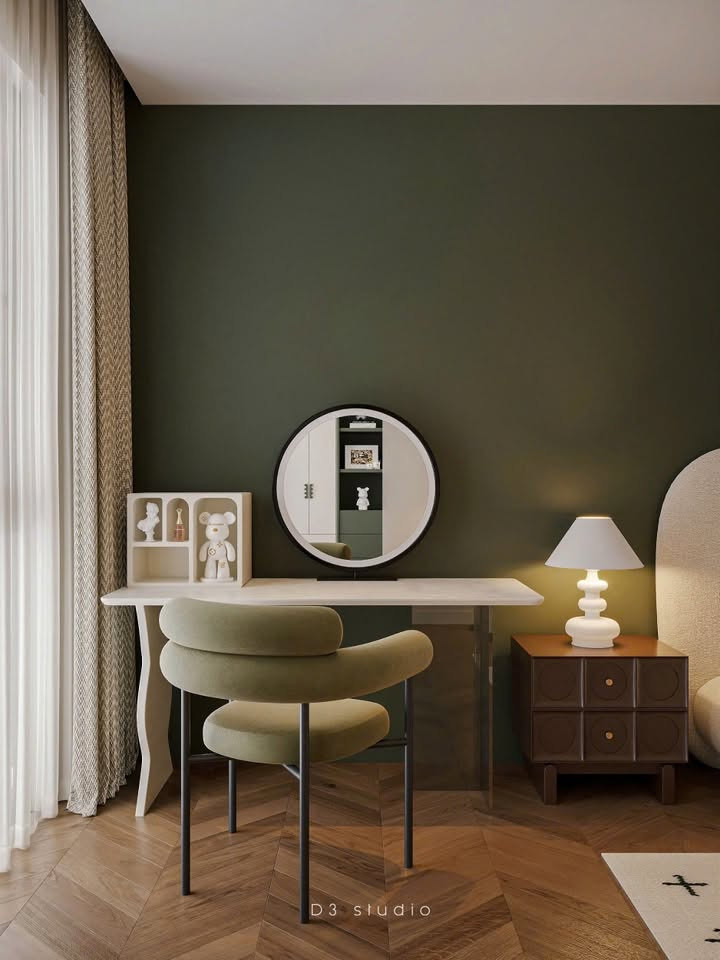
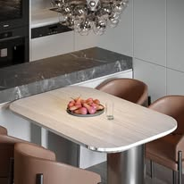
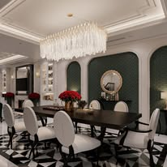
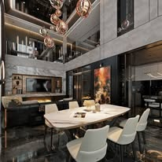
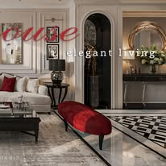

Tài liệu phân tích yêu cầu · Business Analysis Document v1.0
D3 Studio thiết kế – thi công nội thất. Tài sản giá trị nhất là thư viện ảnh công trình.



Bộ lọc một chiều. Bốn nhãn dẫn sang bốn trang khác nhau. Không lọc được theo phòng, phong cách, vật liệu hay diện tích.
Trang chi tiết mỏng. Gần như chỉ là chuỗi ảnh, tiêu đề, nút share và một đoạn mô tả.
Tên dự án vô nghĩa với người tìm kiếm. “project no.08 The Fauvisim” — thẩm mỹ cao, nhưng không ai gõ như thế vào Google.
Nền tảng WordPress + WPBakery: khó mở rộng nghiệp vụ, khó gắn tracking hay AI.
Phân loại hai chiều. Loại công trình (chung cư · biệt thự · nhà phố) nhân với loại phòng (khách · bếp · ngủ · trẻ em).
Phong cách chỉ nằm trong tiêu đề bài viết. Là chữ trong tiêu đề, không phải thuộc tính lọc được.
Hệ quả. Khách muốn tìm “phòng khách chung cư Wabi-sabi tông gỗ sáng dưới 800 triệu” thì không có cách nào ngoài đọc thủ công từng bài.
Nguyên văn yêu cầu của khách: “anh chỉ muốn nó tìm được theo danh mục… muốn chia kĩ hơn, ví dụ phòng khách – phong cách gì”.
Thư viện thiết kế của công ty là dữ liệu phi cấu trúc — ảnh cộng văn bản mô tả tự do.
Vì không được cấu trúc hóa, nó không thể:
Đừng coi website là một quyển catalogue — in ra là xong, ai xem cũng như nhau. Hãy coi nó là một cửa hàng có nhân viên bán hàng: biết xếp hàng trên kệ, biết tư vấn “anh thích bộ sofa này thì em có mấy mẫu tương tự”, và cuối ngày biết báo cáo lại cho giám đốc.
Website không chỉ là kênh trưng bày mà là một cảm biến thu thập dữ liệu thị hiếu thiết kế.
Khảo sát khách hàng cuối theo §4.1 — mẫu tối thiểu 80 người — chưa thực hiện. Số liệu ở đây là lời khai của bên đặt hàng.
Ảnh đăng lên đóng dấu tên D3 rõ — như dấu chìm đã có trên các ảnh trong deck này.
Đơn vị gắn nhãn phải là không gian, không phải dự án.
Một dự án biệt thự có phòng khách Indochine nhưng phòng ngủ lại Scandinavian. Gắn tag ở cấp dự án thì sai — và mọi bộ lọc, mọi gợi ý, mọi báo cáo xu hướng dựng trên nó cũng sai theo.
Đây là quyết định thiết kế quan trọng nhất của toàn hệ thống.
Cùng một hồ sơ dự án. Gắn nhãn ở cấp dự án thì buộc phải chọn một trong hai — và khách tìm phong cách nào cũng trượt.




/portfolio/{không-gian}/{loại}/{phong-cách}
Mỗi tổ hợp facet phổ biến sinh một URL riêng để SEO.
KTS tải ảnh hàng loạt → AI gợi ý tag và mô tả nháp → KTS xác nhận → Content biên tập và SEO → KTS trưởng duyệt → kiểm tra quyền công bố ảnh → xuất bản → theo dõi 30 ngày.
Khách vãng lai · Khách đăng ký · KTS · Content · Sale · KTS trưởng · Quản trị. Có nhật ký thao tác.
Tiếng Việt là chính, tên công trình để tiếng Anh.
Website là một cảm biến thu thập dữ liệu thị hiếu thiết kế — không chỉ là kênh trưng bày.
Cấu trúc hóa dữ liệu ở cấp không gian là điều kiện để tìm kiếm, gợi ý, chatbot và báo cáo xu hướng cùng hoạt động. Bỏ bước đó thì ba trục còn lại không có gì để đứng lên.